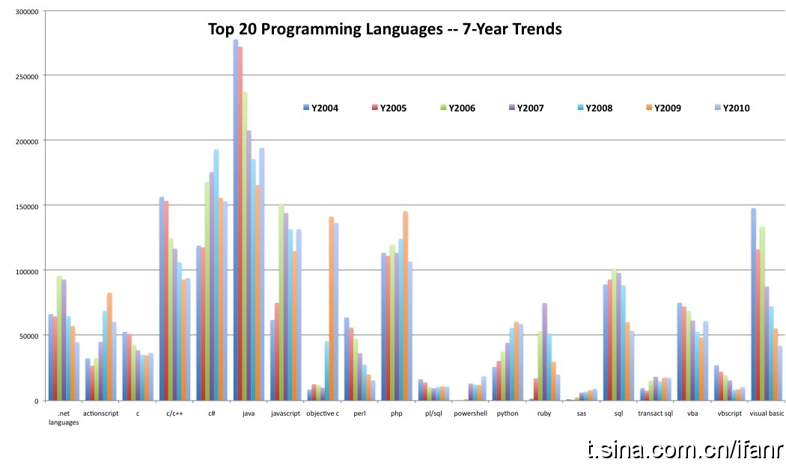

估计都明白这道理，所以Oracle找Google打关于Android上Java的官司。希望是双盈结局。@爱范儿:前20大编程语言过去七年的发展趋势 网页链接 Java在历经四年的大幅下滑猛然回升，从时间来看，Android功不可没。 #ifanrlive# 
分享自 @微盘 ( 网页链接 )@檀林_hootch:通过@微盘 分享了一个文件, "AWS Architecting Cloud Computing.ppt", 亚马逊云计算架构设计要点，欢迎大家下载分享！网页链接
是啊，我听乐了。但这个办法不错，整别人也挺好的。 //@大金-BLAAZZE:George老师总是语出惊人！@Ada李力:有个管不住自己短炒习惯的股民，想个办法是自己买了股票后，让老婆把密码改掉，不让自己知道。今天听同事George说他克制自己玩游戏的办法是修改host文件，把游戏网站统统指向127.0.0.1
 网页链接 Java在历经四年的大幅下滑猛然回升，从时间来看，Android功不可没。 #ifanrlive#
网页链接 Java在历经四年的大幅下滑猛然回升，从时间来看，Android功不可没。 #ifanrlive#